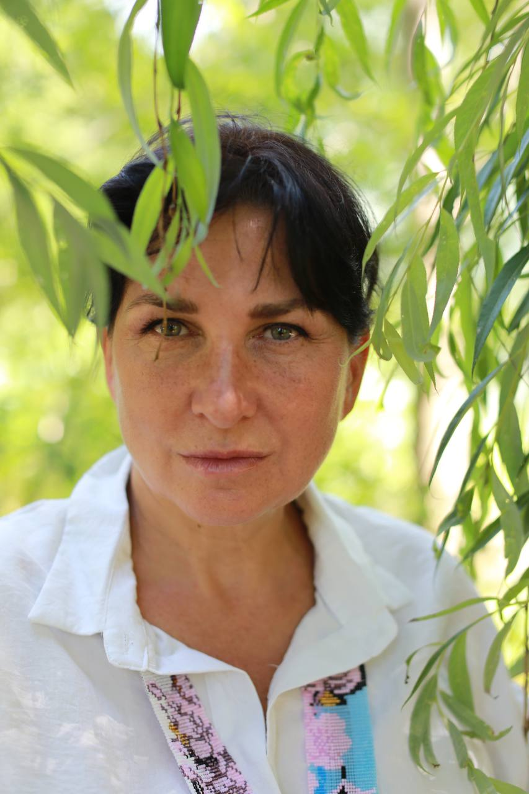
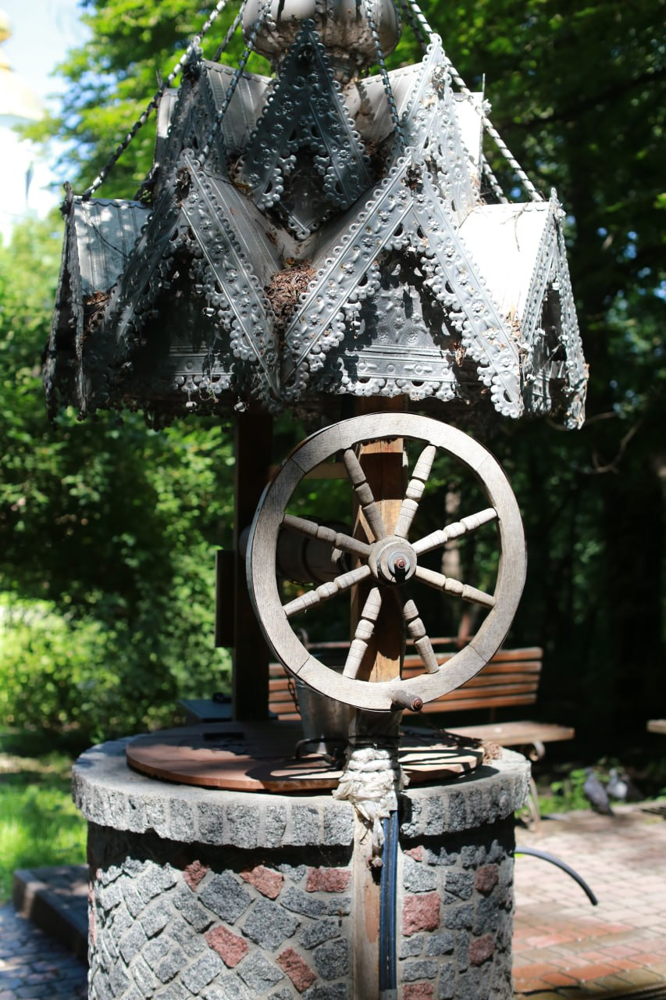

Метастан свідомості
Стан Творця стає станом існування. Обживаємось в ньому, вчимося створювати свій Світ.
Простір трансформації "Opus Magnum"
Інформація і енергія, що отримані в потоці, перетворились в ментальний інструмент роботи зі свідомістю. Метод глибинної трансформації самоідентифікації і картини Світу. Дослідження і створення реальності.
Про метод
Це потоково-ментальний інструмент. Він поєднує завантаження
інформації і енергії потоку, який йде через провідника, і
вербальні інструкції, які дає провідник в процесі роботи, для
створення в ментальному просторі людини моделі Комплексу
Фрактальних Копій.
Це дає глибинну зміну стану і, як наслідок, сприйняття себе,
як Джерельну свідомість, яка живе через фізичне тіло.
Стан Творця стає станом існування. Обживаємось в ньому, вчимося створювати свій Світ.
Про структуру людини, про інструменти взаємодії зі Світом, про механізм створення реальності.
Розширення спектру сприйняття світу через органи відчуттів, стан Спостерігача і Метастан як базові, емоційна рівновага, оздоровлення і омолодження, дослідження Світу у всіх його проявах.
Світ має на багато більше координат, ніж ти звик сприймати. Схлопуємо світогляд двоїстості. Вчимося навігації в новій парадигмі.

«Все починається з довіри до своєї Джерельної частини»
Про першого провідника
Перша, через кого Метод Фрактальних Копій проявився в цей Світ як технологія. Засновниця Простору трансмутації людини "Opus Magnum".
В осени 2025 року через мене у Світ почало вивантажуватись нове знання і нові спектри енергії, які отримали назву Метод Фрактальних Копій.
За плечима досвід лікаря анестезіолога-реаніматолога, головного лікаря, топменеджера та тілесно-орієнтованого терапевта з авторськими методиками роботи через тіла людини.
Понад 35 років практик, наукового, метафізичного та духовного пошуку сформували в мені інструменти і структуру, які зробили можливим прийняти, укорінити в нашому Просторі і декодувати нові знання для людини і світу.
Формати взаємодії
Кожен формат створений для різної глибини запиту — від першого знайомства з Методом до навчання та індивідуальної трансформаційної роботи.
Групове онлайн-навчання Методу Фрактальних Копій із послідовним переходом між рівнями.
Персональна робота із запитом.
Навчальні, тематичні та дослідницькі події для глибшого знайомства з Методом Фрактальних Копій.
Благодійний проєкт, спрямований на відновлення фізичного, психічного та емоційного здоров'я.
Ваш шлях
Якщо ти зараз тут, значить твої вищі аспекти вже створили імпульс для докорінних змін. Тепер від тебе потрібний намір змінитись. І тоді ось що буде далі.
Під час першої практики ти відчуєш стан, який є природним для кожної живої істоти: «Я є Джерело. Джерело є Я».
Почне змінюватись твоя самоідентифікація. Ти усвідомиш себе як багатовимірну істоту, суттю якої є Джерельна свідомість, що вивчає своє Творіння, набуває нових навичок, створює нові світи. Зрозумієш, як влаштована людина і яке її місце в Творінні.
З'явиться розширення спектру сприйняття світу через органи відчуттів, стан Спостерігача і Метастан як базові, емоційна рівновага, оздоровлення і омолодження. Стане можливим дослідження Світу у всіх його проявах.
Навчишся створювати свою реальність.
Найближчі зустрічі
Навчання, практики та ретрити, створені для глибокого знайомства з Методом Фрактальних Копій і трансформаційної роботи.
Статті та новини
Авторські статті про Метод Фрактальних Копій, природу людини і світу, трансформацію свідомості, новини про Метод.

Про МетодМетод Фрактальних Копій - це потоково-ментальний інструмент, який базується на абсолютно нових принципах роботи зі своєю самоідентифікацією і простором, в якому жве людина.
Простір матеріалів
Тут можна придбати записи пробних практик, підборки практик для відновлення тіла, записи практик з навчальних курсів, що вже минули, замовити індивідуальний Артефакт.
Записи лекційних матеріалів і практик, які проходили під час навчальних курсів і семінарів.
Авторські матеріали (лекції, медитації, практики), що відбуваються на фоні робочого стану МФК.
Артефакт, або коліркод, — це індивідуальний малюнок- налаштування на стан, необхідний для реалізації вашого запиту.
Досвід учасників
Матеріал готується
Зв’язок
Кожна трансформація починається з внутрішнього рішення. Залиште заявку, і ми зв’яжемося з вами, щоб обговорити ваш запит та обрати відповідний формат взаємодії.
Залишити заявку